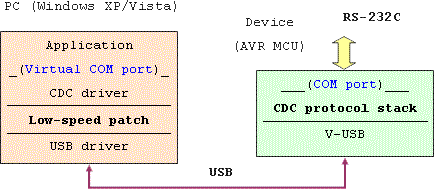

CDC-232
CDC-232 creates a virtual COM port on PC that doesn't have real RS- 232C port. It enables RS-232C communication (without control lines), after connecting the device and installing the driver.

Virtual COM Port over Software-USB
Usage
Write the program to AVR, build the circuit, and connect the device to PC's USB port. Install the driver on Windows. Access the device through generated virtual COM port from terminal software or your application.
Control lines (DTR, DTS, RTS, CTS) are not used by the host application. Set the terminal software as "no flow-control".
Windows requests the driver installation again when connected to other USB port. Detect the previously installed driver automatically. Another COM number will be assigned. If you set serial number in AVR (rebuild with modified usbconfig.h), you can get the same COM port at any USB port. However, you cannot connect multiple CDC devices of the same serial number.
Before detaching the device, close the COM port in terminal software or in your application. Otherwise, you cannot connect to the device again because of the broken file handle. Restart the terminal software or your application then.
Switch to the fast transfer mode using "lowcdc.vbs" to get the baudrate higher than 9600bps.
Loop-back test on ATtiny45 version
Schematics
These schematics are for ATtiny45/85, ATtiny2313/AT90S2313, and ATmega8/48/88/168. Their firmware are all ISP-programmable. The red LED drops the USB voltage from 5V to 3.3V, and provides to AVR. The current is about 10mA, and is not enough to drive other circuit. When connecting to other MCU, connect Gnd and connect TxD and RxD in crossing way. R4 limits the leak current when the MCU's Vcc is 5V. You can omit if the Vcc is equal. R5 protects the TxD pin when it shortened to Gnd. You can omit both R4 and R5 if you connect to the RS- 232C driver like MAX232. Use crystal oscillator. Although ceramic resonator works well in most cases, it becomes unstable if the frequency deviation is bigger.
ATtiny45/85 uses internal RC oscillator and PLL.
It is calibrated by USB signal when connected. UART is implemented by software. It is not enough for high speed data transfer. If the TxD and the RxD are inverted (rebuild with -DUART_INVERT option), you can directly connect to RS-232C line.
1200 - 4800bps, 8N1
CDC-232 for ATtiny45-20
ATtiny45 example using mini-B connector
ATtiny2313/AT90S2313 has 2KB program memory. Although the baudrate is configured automatically, some functions are omitted. 600 - 38400bps, 8N1
CDC-232 for ATtiny2313-20
ATmega8/48/88's internal UART is configured from the PC. The flow-control (RTS/CTS) is supported.
600 - 38400bps, data 7/8, parity N/E/O, stop 1/2
CDC-232 for ATmega8/48/88-20
Connecting to the RS-232C channel requires TxD and RxD inverting the polarity and matching the level. Use the dedicated IC like MAX232. You can substitute this simple circuit for it.
When the target MCU has a different Vcc, it causes leaking current through the signal lines. This corrupts the signal, or drives the MCU without power supply. This circuit is not perfect, but is enough for most cases.